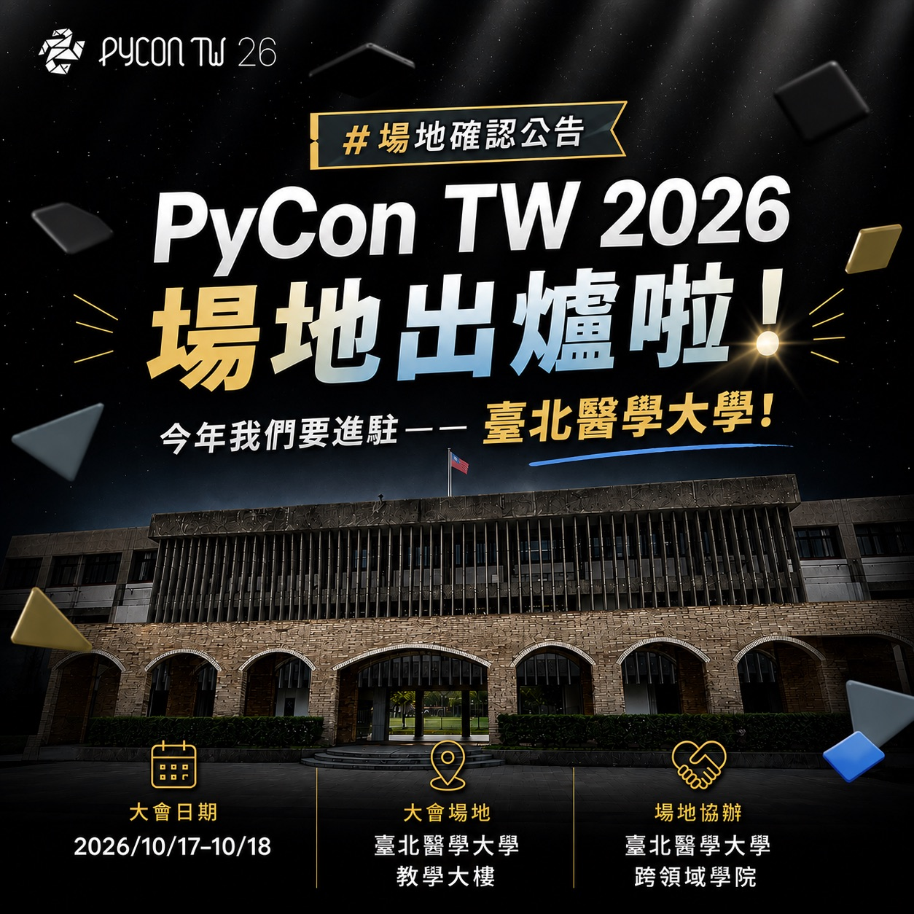
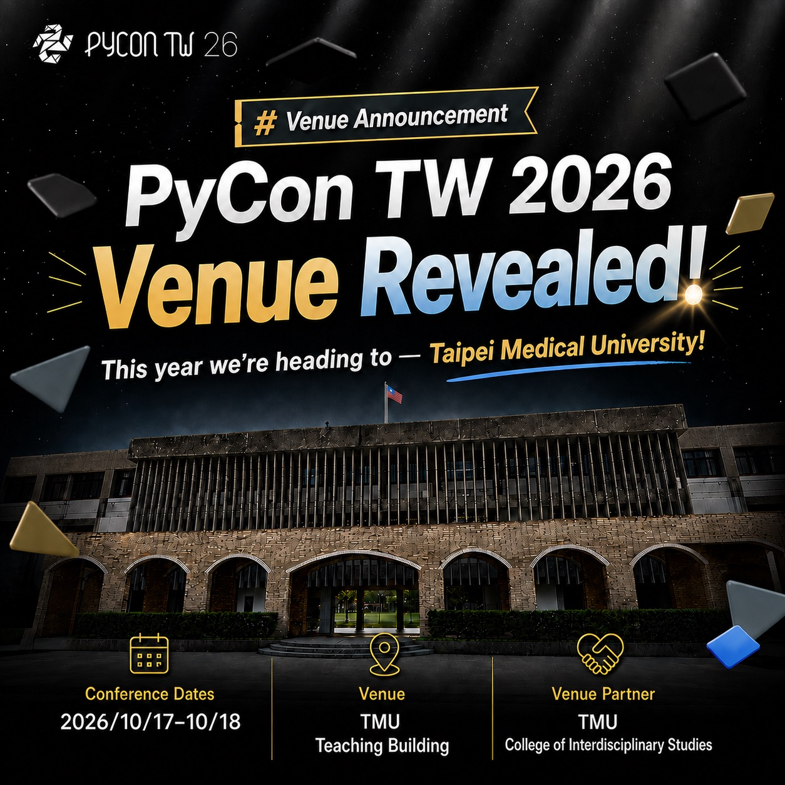

PyCon TW 2026 的場地出爐啦！
Posted on Sat 29 August 2026 in announcement


PyCon TW 2026 的場地出爐啦！
🎉 今年我們要進駐——臺北醫學大學 🎉
本屆大會將在「臺北醫學大學 教學大樓」舉行，也感謝場地協辦單位「臺北醫學大學 跨領域學院」的大力幫助
今年，我們要把 Python 社群帶進北醫校園，讓軟體開發、資料科學、AI 與各種跨域應用在這裡碰撞✨
現場除了可以聽技術分享、認識社群夥伴，還可能帶走新工具、新觀點，以及一個原本完全沒打算開始的新專案
📅 大會日期：2026/10/17–10/18
📍 大會場地：臺北醫學大學 教學大樓
🎟️ 購票連結快點這邊衝一波 👉 https://lihi1.me/9wIMG
🐍 PyCon TW 2026 將是：「Python × 跨域探索 × 校園交流 × Community Vibes」
無論你是資深開發者、剛踏入 Python 世界的新手，或是正在探索不同領域的學習者，都歡迎來這裡交換想法、認識夥伴，一起解鎖技能樹的新分支！
📣 把行事曆打開，標起來、設定提醒，再揪上你的夥伴 —— PyCon TW 2026，北醫見！
The venue for PyCon TW 2026 is officially announced!
🎉 This year, we’re heading to Taipei Medical University! 🎉
The conference will take place in the Teaching Building at Taipei Medical University. A huge thank-you to our venue partner, the College of Interdisciplinary Studies at Taipei Medical University, for their incredible support.
This year, we’re bringing the Python community to the TMU campus, where software development, data science, AI, and cross-disciplinary applications will come together and spark new ideas.
Come for the technical talks and community connections—and you might leave with new tools, fresh perspectives, and a project you never planned to start.
📅 Conference dates: October 17–18, 2026
📍 Venue: Teaching Building, Taipei Medical University
🎟️ Grab your ticket here 👉 https://lihi1.me/9wIMG
🐍 PyCon TW 2026 brings together: “Python × Cross-Disciplinary Exploration × Campus Connections × Community Vibes”
Whether you’re an experienced developer, just starting your journey with Python, or exploring across different fields, come exchange ideas, meet new people, and unlock a new branch of your skill tree!
📣 Open your calendar, save the dates, set a reminder, and invite your friends—PyCon TW 2026, see you at TMU!
PyConTW2026 Python進校園 跨域技能樹 北醫見 買票啦各位 PythonOnCampus BuildYourSkillTree SeeYouAtTMU GrabYourTicketNow